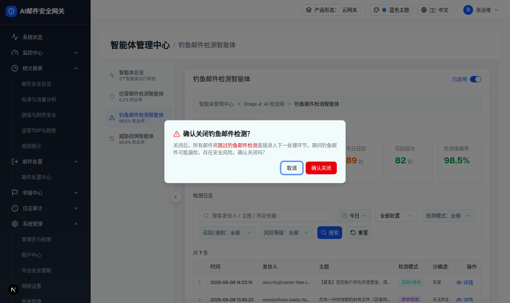

| 所属组件 | 2.1 外套控制栏与启用开关 |
| 主文件 | index.html |
| 触发路径 | 卡片头部开关关闭 phishingV1 → setPendingDisableAgent("phishingV1")（不直接关闭）→ AlertDialog |
| demo 组件 | agent-center-page.tsx 尾部 AlertDialog |
| spec 章节 | §4.3 降级 / 安全提示（关闭后漏检风险） |
toggleAgentEnabled(phishingV1,false) 并在卡片内显示危险横幅（见 2.1）；「取消」→ 保持启用。仅 phishingV1 / impersonation 走此二次确认。关闭后，所有邮件将跳过钓鱼邮件检测直接进入下一处理环节，期间钓鱼邮件可能漏检，存在安全风险。确认关闭吗？

| # | 元素 | 文案 | 行为 |
|---|---|---|---|
| 1 | 标题 | 确认关闭钓鱼邮件检测？（AlertTriangle 红） | — |
| 2 | 描述 | 关闭后所有邮件将跳过钓鱼邮件检测…存在安全风险 | 「跳过钓鱼邮件检测」红色强调 |
| 3 | 取消 | 取消 | 关闭弹窗，保持启用 |
| 4 | 确认关闭 | 确认关闭（红） | toggleAgentEnabled(pendingDisableAgent,false) + 卡片内危险横幅 |
| 比对项 | demo 实际 DOM | 提取的 HTML | 是否一致 |
|---|---|---|---|
| 弹窗根 | div[role=alertdialog] childCount=2 nodeCount=12 | 真实提取 DOM（role=alertdialog） | ✅ |
| 标题图标 | AlertTriangle text-red-500 | 真实 AlertTriangle text-red-500 SVG | ✅ |
| 强调文案 | "跳过钓鱼邮件检测" font-medium text-red-600 | 一致 | ✅ |
| 确认按钮 | bg-red-600「确认关闭」 | 一致 | ✅ |
| 取消按钮 | AlertDialogCancel「取消」 | 一致 | ✅ |